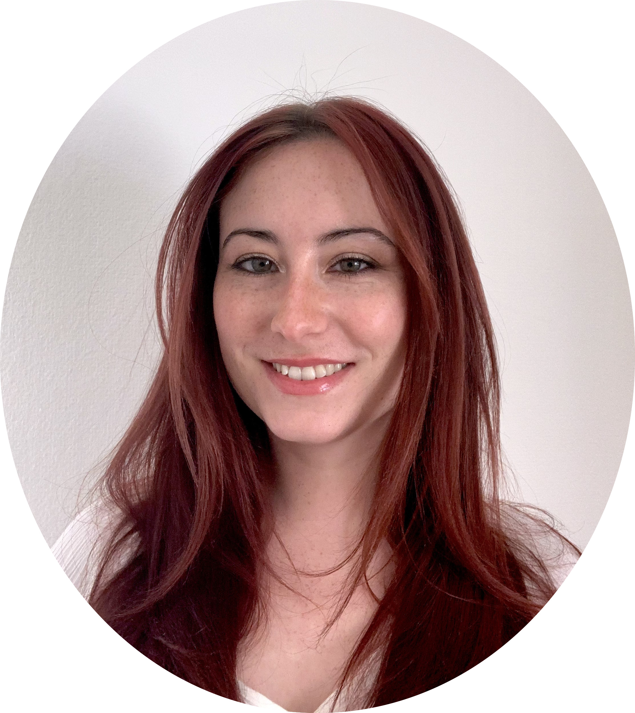

Planets, stars & the chemistry of life
Bethany Burt
Doctoral Candidate in Astrophysics
I explore what the atmospheres of planets beyond our Solar System could look like, and whether they could support life.
Ludwig-Maximilian University of Munich
Munich Center for Geoastronomy

Your photograph here
From molecules
to other worlds.
I trained as a chemist before finding my way into astrophysics. Today, I use that background to understand the atmospheres of rocky planets, read the chemistry of stars, and explore what life might look like in unfamiliar environments.
Inside the stars
Using spectra to investigate the chemistry usually hidden beneath a star’s surface.
Stellar spectroscopy ↗Around other worlds
Which rocky planets retain atmospheres, and what would we see when we look?
Planetary atmospheres ↗Beyond water
Exploring the behaviour of life’s building blocks in alternative solvents.
Astrobiology ↗